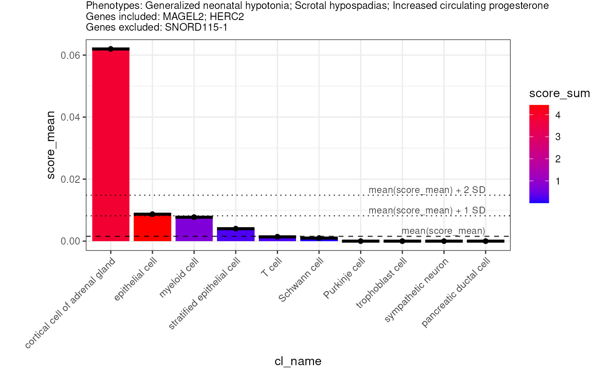

Predict the causal cell types underlying a patient's phenotypes given some varying degree of prior knowledge.
predict_celltypes(
phenotypes,
diseases_include = NULL,
diseases_exclude = NULL,
genes_include = NULL,
genes_exclude = NULL,
gene_weights = list(include = 2, default = 1, exclude = 0),
results = MSTExplorer::load_example_results(),
phenotype_to_genes = HPOExplorer::load_phenotype_to_genes(),
agg_var = c("cl_name"),
effect_var = "logFC",
x_var = agg_var[1],
y_var = "score_mean",
fill_var = "score_sum",
evidence_score_var = "evidence_score_sum",
max_x_var = 10,
subtitle_size = 9,
plot.margin = ggplot2::margin(1, 1, 1, 40),
show_plot = TRUE,
save_path = NULL,
width = NULL,
height = NULL
)Phenotypes observed in the patient. Can be a list of HPO phenotype IDs or HPO phenotype names.
Diseases that the patient is known to have. Can be provided as OMIM, Orphanet, or DECIPHER disease IDs.
Diseases that the patient is known NOT to have. Can be provided as OMIM, Orphanet, or DECIPHER disease IDs.
Genes in which the patient is known to have abnormalities.
Genes in which the patient is known NOT to have abnormalities.
A named list describing the weight to apply to genes in the include, default, and exclude lists.
The cell type-phenotype enrichment results generated by gen_results and merged together with merge_results
Phenotype to gene mapping from load_phenotype_to_genes.
The variable(s) to aggregate results by.
Name of the effect size column in the results.
Variable to plot on the x-axis.
Variable to plot on the y-axis.
Variable to fill by.
Which variable from add_evidence to use when weighting genes.
The maximum number of cell types to display.
Size of the plot subtitle.
margin around entire plot (unit with the sizes of
the top, right, bottom, and left margins)
Print the plot to the console.
Save the plot to a file.
Set to NULL to not save the plot.
Width of the saved plot.
Height of the saved plot.
data.table of prioritised cell types, sorted by a "score" that combines:
The phenotype-cell type enrichment p-values ("p").
The phenotype-cell type enrichment effect size ("effect").
A gene-wise factor that upweights/downweights
included/excluded genes respectively,
multiplied by the evidence score of a phenotype-gene association.
Only applied when genes_include or genes_exclude is provided.
phenotypes <- c("Generalized neonatal hypotonia",
"Scrotal hypospadias",
"Increased circulating progesterone")
# diseases_include <- "OMIM:176270"
genes_include <- c("MAGEL2","HERC2")
genes_exclude <- c("SNORD115-1")
ct <- predict_celltypes(phenotypes = phenotypes,
genes_include = genes_include,
genes_exclude = genes_exclude)
#> Translating ontology terms to ids.
#> Adding logFC column.
#> Reading cached RDS file: phenotype_to_genes.txt
#> + Version: v2024-12-12
#> Adding genes and disease IDs.
#> Mapping cell types to cell ontology terms.
#> Adding stage information.
#> Reading cached RDS file: phenotype_to_genes.txt
#> + Version: v2024-12-12
#> Loading ctd_DescartesHuman.rds
#> Loading ctd_HumanCellLandscape.rds
#> Annotating gene-disease associations with Evidence Score
#> Gathering data from GenCC.
#> Importing cached file.
#> Evidence scores for:
#> - 10514 diseases
#> - 5171 genes
#> + Version: 2024-12-18
#> Warning: Invalid .internal.selfref detected and fixed by taking a (shallow) copy of the data.table so that := can add this new column by reference. At an earlier point, this data.table has been copied by R (or was created manually using structure() or similar). Avoid names<- and attr<- which in R currently (and oddly) may copy the whole data.table. Use set* syntax instead to avoid copying: ?set, ?setnames and ?setattr. If this message doesn't help, please report your use case to the data.table issue tracker so the root cause can be fixed or this message improved.
